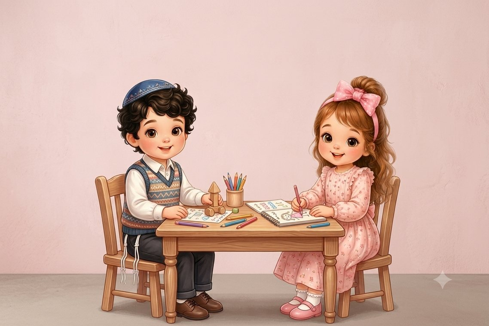

Jardín y maternal
El lugar donde se empieza a crecer
Un ambiente seguro y estimulante, con juego, creatividad, encuentros de aprendizaje y mucho cariño. Abrimos de lunes a viernes.

Horario de actividades
- Lunes a jueves
- 8:30-15:00
- Viernes
- 8:30-13:30
La puerta está abierta hasta las 9:15 y la salida empieza a las 14:45.
Rutina diaria
De 2 a 3 años
- Recepción, juego libre y bandejas sensoriales
- Oración
- Encuentro de la mañana, tema del día
- Preparación para el desayuno
- Desayuno
- Salida al patio
- Encuentro de aprendizaje con maestra israelí
- Creatividad y bandejas sensoriales
- Actividad de movimiento
- Almuerzo
- Descanso
- Merienda y encuentro de cierre
De 4 a 6 años
- Recepción, juegos didácticos
- Encuentro de la mañana y oración
- Desayuno
- Juego en el patio
- Tema del día
- Creatividad
- Pausa de fruta
- Encuentro de aprendizaje con maestra israelí
- Almuerzo
- Aprendizaje en grupos, contenidos y habilidades
- Actividad de movimiento
- Encuentro de cierre
Los primeros días en el jardín
Durante la adaptación toda emoción es válida y cada dificultad recibe respuesta. Pueden estar tranquilos: estamos con ellos en cada paso.
- Primer día9:00-11:00
Los padres se quedan una o dos horas con su hijo.
- Segundo día8:30-11:30
Los padres se quedan de 15 a 30 minutos y se despiden con un abrazo y un beso.
- Tercer día8:30-13:30
Incluye el almuerzo. Los padres se despiden en la entrada.
- Desde el cuarto díaDía completo
Jornada normal. Los niños que continúan se adaptan según lo necesiten.
Cómo ayudar en la despedida
- Creen un ritual breve y fijo: guardar la mochila, saludar a un juguete querido y despedirse.
- Despídanse de forma corta y segura. Una despedida breve le facilita las cosas al niño.
- Siempre digan adiós, aunque ya esté jugando. No se vayan sin despedirse.
- Despídanse junto con la maestra, para que esté cerca y sea una figura segura.
- Avisen al equipo de cualquier cambio en casa, como una mudanza o el nacimiento de un hermano.